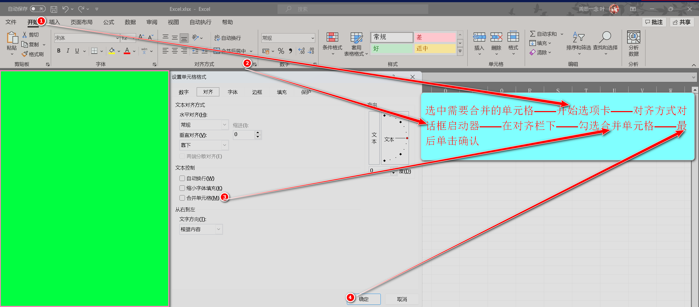
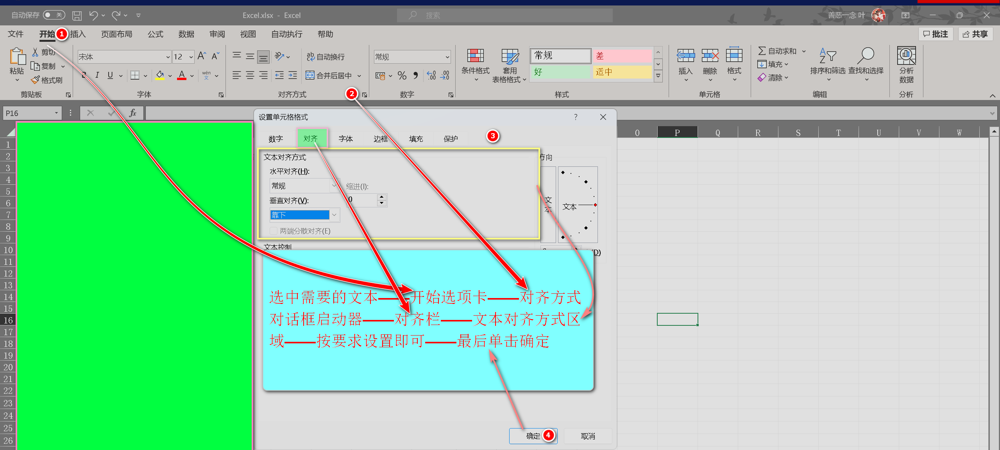
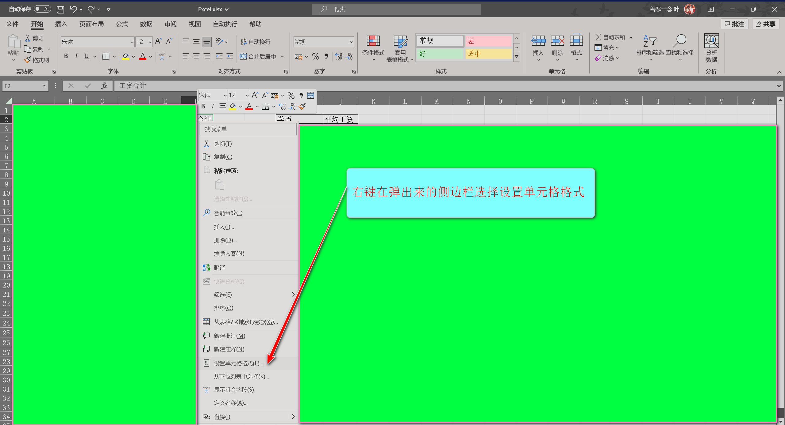
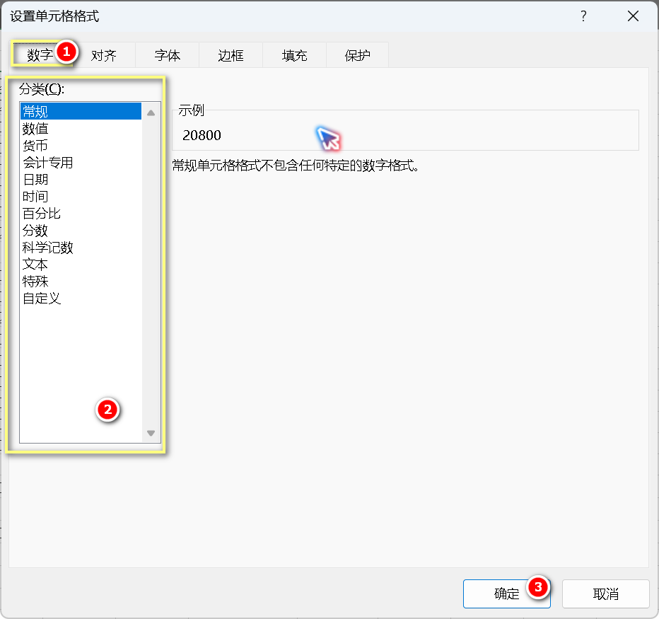

excel
- excel注意总结：
-
合并单元格方法一：选中需要合并的单元格——单击对齐方式对话框启动器——在对齐栏里勾选合并单元格——最后单击确定(该方法适合合并单元格后，非文本居中对齐)
图例：
方法二：(如果合并单元格后，要求文本居中对齐建议使用该方法)：选中需要的单元格后，单击【合并后居中】组 -
文本对齐方式：方法一选中需要的文本——开始选项卡——对齐方式模块中(具体对齐方式，鼠标悬停对应位置，会显示)
图例：
方法二:选中需要的文本——开始选项卡——对齐方式对话框启动器——对齐栏——文本对齐方式区域——按要求设置即可——最后单击确定
-
求和【函数
SUM】(建议先了解该知识):选中求和输出结果的单元格——公式选项卡——自动求和组——拖动鼠标选中需要求和的参数——最后按回车
视频：若记得函数SUM，可以直接输入公式，然后拖动鼠标选中需要的参数——最后按回车
-
设置单元格数据格式：选中单元格——鼠标右键——选择设置单元格格式——在分类选择规定的格式即可


-
求平均值【函数
AVERAGE】(建议先了解该知识):选中求平均值输出结果的单元格——公式选项卡——自动求和下拉菜单——拖动鼠标选中需要求平均值的参数——最后按回车
视频：若记得函数AVERAGE，可以直接输入公式，然后拖动鼠标选中需要的参数——最后按回车
-
COUNT家族【函数
COUNT、COUNTA、COUNTBLANK、COUNTIF、COUNTIFS】:选中条件计数输出结果的单元格——公式选项卡——插入函数组——搜索需要的函数——确定弹出对话框——依次输入正确的参数——单击确定-
COUNT
数字统计【就是数选定区域有多少单元格】——注意：只能是数字格式，不能是文本/字符串
语法：
=COUNT(范围) -
COUNTA
非空单元格统计 【就是数选定区域有多少有内容的单元格】——注意：可以是字符串/文本，因为只认单元内有内容
语法：
=COUNTA(范围) -
COUNTBLANK
空单元格统计 【统计选定区域中空白单元格的数量】注意：只统计真正空白的单元格，单元格内不能有任何内容（包括空格）。
语法：
=COUNTBLANK(范围) -
COUNTIF
单条件统计【可以选定一个条件】——注意：只统计符合条件的单元格数量
语法：
=COUNTIF(范围,条件) -
COUNTIFS
多条件统计【可以选定多个条件】——注意：只统计符合条件的单元格数量
语法：
=COUNTIFS(范围1,条件1,范围2,条件2,范围3,......)
视频：
提升参数输入效率：若记得函数，可以直接输入公式，然后拖动鼠标选中需要的参数——最后按回车(但是不建议用)
-
其他知识
-
使用公式需要知道的
-
同一公式重复使用
在excel中，使用公式不需要一个一个输入(插入)，可以通过鼠标，向下拉到需要的位置。
步骤：鼠标移动至单元格右下角——当鼠标变为黑色十字架即是可以拖动——长按鼠标左键拖动到需要的位置即可(注意只能(一行/一列)同一方向拖动) -
三种引用方式对比
引用类型 写法示例 填充时的变化规律 核心用途 相对引用 =A1 完全变化
向下填充变=A2，
向右填充变=B1批量计算 绝对引用 =$A$1 完全不变
无论怎么填充，都指着A1引用固定值 混合引用 =$A1/=A$1 部分变化
$A1:行锁死，列变
A$1：行变，列锁死制作九九乘法表，跨表计算 -
采用公式的两种方法
- 通过公式选项卡插入公式组(自认为建议这种方法因为它会弹出输入参数的对话框，有效避免符号的限制(有时输入成中文，字符串不添加双引号……))
- 在单元格手动输入
-
- 注意：当规定单元格数据格式为保留小数后几位时，不管当前数据有没有小数点，按步骤设置一遍
- 严格按照题目所规定的单元格路径操作
- 输入函数参数的时候，只能是英文字符，当是字符串/文本需要英文双引号包裹(若是使用插入函数组，弹出的对话框则不需要)